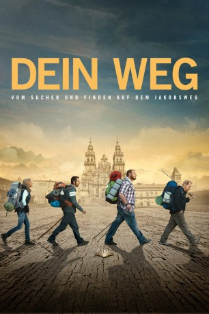

#790 Dein Weg
Alternativ: The Way
 
 IMDB-Wertung: 7.4 / 10
IMDB-Wertung: 7.4 / 10  Metascore: 64
Metascore: 64 
Der Augenarzt Tom Avery reist nach Frankreich, um den Leichnam seines Sohnes Daniel, der bei einem Sturm in den Pyrenäen umkam, zurückzuholen. Avery äschert die Überreste seines Sprosses ein, packt diese in dessen Rucksack und folgt damit den letzten Spuren seines Sohnes. Ganz anders als sein bodenständiger Vater, war Daniel ein rastloser Abenteurer, der die ganze Welt bereiste. Um seinem Sohn die letzte Ehre zu erweisen beschließt Tom den berühmten Jakobsweg entlang zu pilgern und dort die Asche seines verstorbenen Sohnes zu verteilen. Auf seiner Reise, die er alleine beginnt, lernt er schnell viele Leute aus den verschiedensten Ländern der Welt mitsamt ihren unkonventionellen Lebenseinstellungen kennen. Während er, begleitet von den schmerzhaften Erinnerungen an seinen geliebten Sohn, den Pilgerpfad entlang wandert, beginnt er Stück für Stück an seiner biederen Lebenseinstellung zu zweifeln.
Jahr: 2010
Dauer: 123 Minuten
FSK: 6
Land: USA Studio: PDATonspuren: DTS - ,
Untertitel: Deutsch,
Auflösung: 1080p (1920x1040) Größe: 14233 MB
Genre: Abenteuer, Komödie, Drama
Regisseur:  Emilio Estevez
Emilio Estevez
Drehbuch: Emilio Estevez, Jack Hitt
Soundtrack: Tyler Bates
Darsteller:
 Martin Sheen als Tom
Martin Sheen als Tom Emilio Estevez als Daniel
Emilio Estevez als Daniel Deborah Kara Unger als Sarah
Deborah Kara Unger als Sarah Yorick van Wageningen als Joost
Yorick van Wageningen als Joost James Nesbitt als Jack
James Nesbitt als Jack- Renée Estevez als Doreen
- David Alexanian als Roger
 Spencer Garrett als Phil
Spencer Garrett als Phil Tchéky Karyo als Captain Henri
Tchéky Karyo als Captain Henri Ángela Molina als Angelica
Ángela Molina als Angelica Simón Andreu als Don Santiago
Simón Andreu als Don Santiago Carlos Leal als Jean
Carlos Leal als Jean Matt Clark als Padre Frank
Matt Clark als Padre Frank- Omar Muñoz als Gypsy Boy
- Antonio Gil als Ishmael
- Manuel Calvo als Penitente #3
- Romy Baskerville als Eunice
 William Holden als Cal
William Holden als Cal- Joe Torrenueva als Father Sandoval
- Stéphane Dausse als French Mortician
- Patxi Pérez als Waiter
- Joan Díez als Carlo
- Anthony Von Seck als Setar Playing Pilgrim
- Eusebio Lázaro als El Ramón
- José Luis Molina als Policeman #1
- José Javier Ruiz als Policeman #2
- Coro El Encuento Burgos als Gypsy Singers
- Alfonso Delgado als Penitente #1
- Víctor Molero als Penitente #2
- Milagros Alcalde Díez als El Molino Inkeeper
- Maximiano Benito Nebreda als El Molino Inkeeper
- Santi Prego als Santiago Office Clerk
Datei: X:\2010(A-F)\Dein Weg (2010, FSK6, 1920x1040).mkv seit 25.03.2015
Festplatte: HD 2009(G-Z)-2010(A-F)
 Es gibt insgesamt 95 Filme in der Gruppe '2010(A-F)'
Es gibt insgesamt 95 Filme in der Gruppe '2010(A-F)'